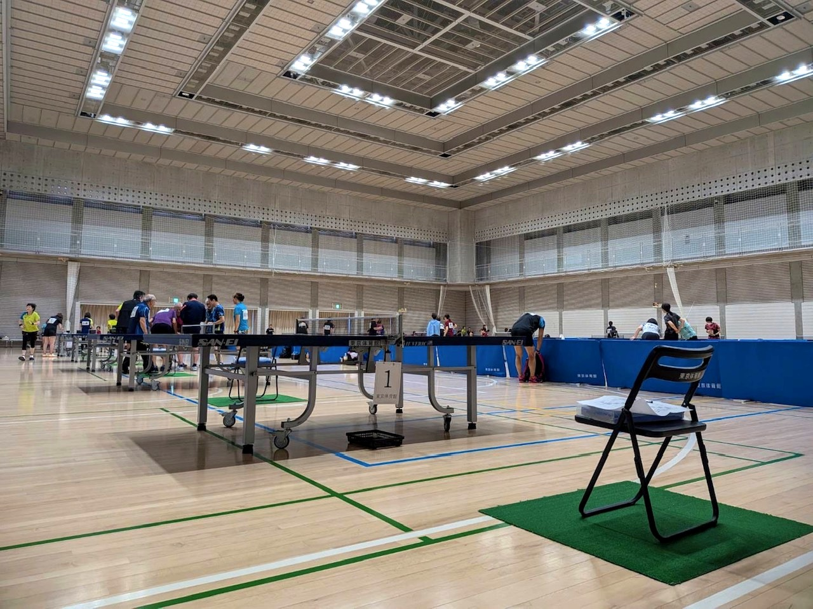
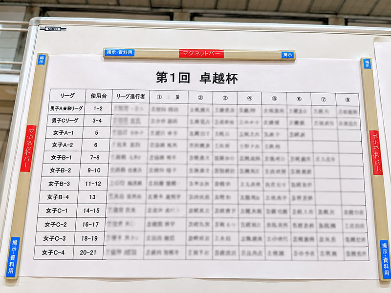

全障スポ、千葉県7年連続代表がいく vol.1
VICTAS協賛 第1回「卓越杯」
平日の卓球大会って、あまり行かないですよね。皆さんはどうなんでしょうか。
普段、練習相手をしてもらっているS君は卓球歴15年以上。パラID・クラス11、年代別全国4位の実績を持つ選手です。
かなり上手い。そして年間を通して、いろいろな試合に出ています。
そんなS君が2026年9月4日に参加したのが、タクエツ卓球主催のVICTAS協賛 第1回「卓越杯」です。
東京体育館サブアリーナで開催
2026年9月4日、会場は東京体育館サブアリーナ。種目はシングルスで、参加資格はオープンです。

80人くらい、1人あたり6〜7試合できるとのこと。平日にこれだけ卓球をやる人が集まるのか……。卓球界、思っていた以上に元気です。
平日の大会、女性選手が多い
参加者を見てもうひとつ驚いたのが、女性選手の多さです。
見た印象では8割ほどが女性。レディース大会が平日に多く開催されていることは知っていましたが、男女混合のオープン大会でも女性が多いんですね。これは初めて知りました。

VICTAS協賛 第1回「卓越杯」
主催はタクエツ卓球。今回は「第1回」と銘打たれた大会です。
新宿店もオープンしているので、新しい環境で大会を開催していく取り組みのひとつなのかもしれません。ここはあくまで私の推測です。
タクエツ卓球
中国人コーチを筆頭に、グループレッスンなど格安で受けれる。
タクエツ卓球 公式サイト気になる戦績は？
S君の戦績は、3〜4位くらいだったようです。
大会の様子はXでも「卓越杯」で投稿されています。
「卓越杯」を検索
大会について投稿された情報をXで確認できます。
Xで「卓越杯」を見る初めての真面目卓球記事でした。
平日の大会にも、休日とはまた違った卓球の景色があるようです。
なんでもそうですが、好きなことを続けられるって素敵なことです。
"KEEP PLAYING. KEEP GOING."